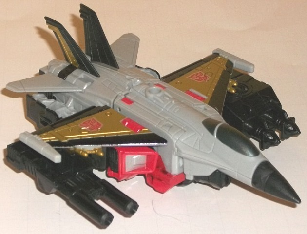
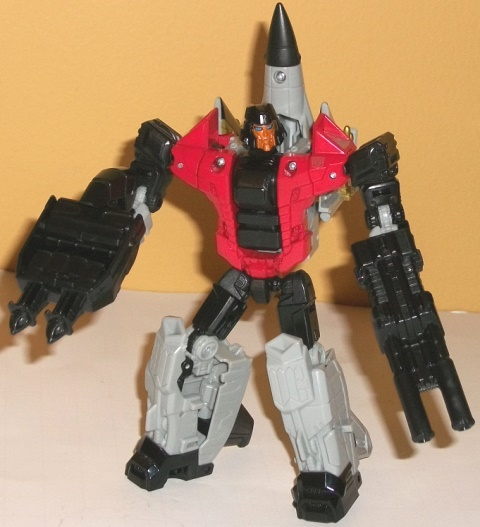
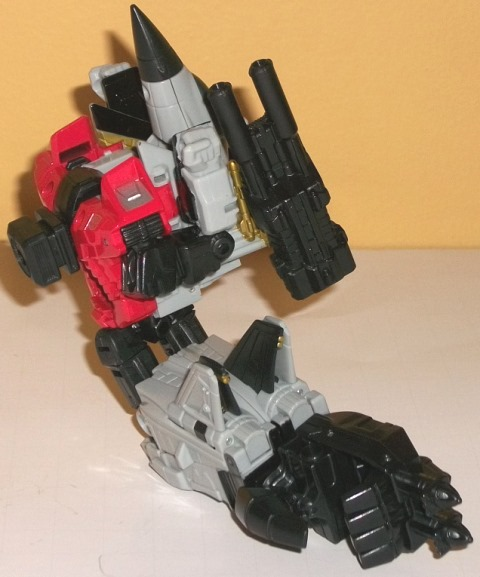
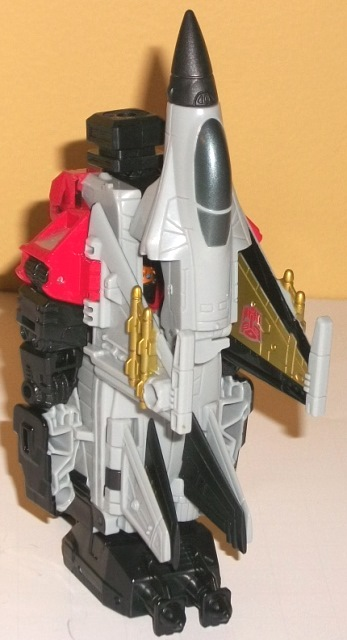

Allegiance
: Autobot
Size
: Deluxe
Difficulty of Transformation to Robot:
Easy
Difficulty of Transformation to Leg
:
Very Easy
Difficulty of Transformation to Arm
:
Very Easy
Color Scheme
: Light flat gray, black,
red, and some metallic gold, dark metallic bluish silver, moderately dark
blue, metallic bronze, and silver
Rating
: 7.9


Skydive's alternate
mode is a jet, and fits right in with the rest of the Aerialbots in terms
of being a realistic aircraft. The "core" jet mode looks great-- it's largely
proportional except for the wings, which are a titch small but not to the
point where it's really obvious. The gray used for most of his coloration
is a fairly flat shade-- rather dull, but at least it's not that super-blah
light milky gray. It looks more like the actual color of an aircraft. What
makes this mode pop a bit visually are the gold paint on the main wings,
the gold stripes on the black tailfins, and the gold missiles. The contrast
on the wings is exceptional, with the shade of metallic gold going VERY
nicely with the black. The dark metallic bluish silver is also a great
shade for a cockpit-- it makes it look a bit tinted. There's also some
red in this mode, though it's more of an accent color to just bring a bit
more color variety to the toy. In general, however, where the gold paint
isn't present this scheme can get a bit dull. The big issue I have with
this mode is sadly common to jetformers, and that's all the robot kibble
underneath. The arms are particularly obvious, and stick out in between
his wings even when looking at Skydive from a top-down view. At least the
front of his shoulders look like intakes, though, so that part of his robot
mode at least fits in here. His folded-up legs also give him a larger undercarriage
than I'd like, so he looks too bulky from a side view. He also doesn't
have any sort of landing gear, and there's no transformational reason for
this. Skydive has three 5mm ports in this mode for holding compatible weapons--
a port on the underside of each wing near each tip, and one smack-dab in
the middle top. Skydive comes with weapons to fill two of these ports--
one of the "hand/food/gun" accessories that pretty much all Combiner Wars
toys come with (this one has two missles molded into the front), and the
other is a double-barreled blaster accessory-- nothing special, but TFs
do need their guns. One final note about this mode is that the nosecone
and black tailfins are made of the softer, rubbery plastic for safety reasons,
but I haven't seen any warping on the wings yet.
Skydive's robot mode
is definitely the strongest of his modes, and is definitely where the "meat"
of the design work went. His jet parts-- his wings and nosecone, namely--
fold up his back and don't hamper articulation at all, even if they make
him slightly backheavy as a result. Due to his transformation you can also
fold out his wings slightly if you so desire. His core robot mode proportions
are largely fantastic-- his waist is a bit overly skinny and his shoulders
a bit TOO broad due to his transformation, but these are fairly minor quibbles.
I do love his thicker-than-normal arms, they make him look a bit more individualistic,
since his transformation is very uninspired for a jet, mostly consisting
of just folding out his robot bits from underneath his jet mode (the shoulders
sliding around and up is the only really unique part of it). His headsculpt
is also fantastic, calling back to his G1 form while also modernizing quite
a bit, with some excellent robotic detailing around his lips and the sides
of his "helmet". The bronze paint on the face and the blue eyes also go
REALLY nicely against the black-- I wish the bronze had been used a bit
more on him, it's a great shade. Red also becomes a much more prevalent
color in this mode, contrasting particularly excellently against the black--
nearly his entire chest is painted in this color, along with parts of his
shoulders. This helps to give him a bit more color variety, which is good
since the gold from his jet mode is largely hidden here. The mold detailing
for his robot parts is fairly generic in the legs (certainly not bad, just
nothing in particular sticks out), but he's got some nice ridged detailing
on his chest, and the black-painted "armor" on his lower arms is also a
nice touch. Skydive is quite articulated-- he can move at the neck, shoulders
(at three points), elbows, waist, hips (at two points), and knees. His
feet are sculpted to work in a slight "A" stance, so there's no issue there,
either. The hip ball joints do seem to be a little looser than I'd like,
however.


Skydive's arm mode--
as is the case with nearly all Combiner Wars limbs-- is a bit of a variation
of his robot mode. His head is rotated back while his combiner port rotates
forward, and his legs are pressed back together, his accessory transforming
into a hand, with his robot waist serving as a sort of elbow joint. The
jet parts on the backback stay the same, but Skydive's regular arms are
folded up in a rather obvious, ineffectual manner against his sides. I
wish they had more seemlessly blended into the sides without the hands
being so darned obvious, but at least the arms peg in somewhat securely
into the wings so they aren't loose. All in all it's one of the more solid
arm modes of the Combiner Wars line-- despite said obvious arms, they do
get rather compact. There's also those two ports on the ends of the wings
that can hold extra weapons. For articulation in this mode, Skydive can
move at the shoulder (at two points), elbow (at two or three points, depending
on whether the robot knees are facing forward or not), wrist, thumb (at
two points), and at the base of his four fingers (all moving as one joint).
The leg mode for Skydive
is pretty much just his jet mode with the wings and cockpit folded into
their robot mode position. The tailwings are also folded together, the
robot head is rotated down to bring up the combiner port, and then the
foot accessory is plugged in at the bottom. By and large this is a pretty
decent leg mode-- it certainly looks solid, and those same two ports on
his wings I mentioned earlier can still store stuff in this mode. However,
his robot arms stick out like sore thumbs from the sides-- again, I wish
there was some way to collapse them into the main body or fold them to
the back. Skydive has the same articulation as all other Combiner Wars
deluxes in leg mode-- his foot can rotate, and the knee joint can move
at two points.
Skydive works much better
as part of a gestalt than as his own individual toy. His arm and leg modes
aren't perfect, but both of them are relatively solid and stable. As a
stand-alone toy, though, he may have some great robot mode proportions,
but his transformation is pretty boring and his jet mode has a bunch of
stuff on the undercarriage that makes it too bulky. His color scheme--
beyond the wings-- is okay, but nothing particularly awe-inspiring, either.
Among other Combiner Wars toys, Skydive doesn't really stick out. He's
not really bad, he's not really good, he doesn't do anything particularly
innovative, he's just... there, to help fill out the Aerialbot ranks, and
as such my opinion on him overall is pretty mild (though he does have one
of the best headsculpts of the entire line).
Pre-mission psych-screening report
by Rung, Autobot Psy-Ops Specialist
:
A true "student of the game", Skydive
uses his eidetic memory to analyze, catalog, and mimic the aerial maneuvers
and techniques of any aircraft he observes. Displacement rolls, defensive
spirals, pitchbacks, wingovers-- Skydive has seen them all and, more impressively,
he can DO them all. The lone drawback to having such a thorough and varied
"bag of tricks" is that Skydive is occasionally difficult to communicate
with during a battle, as he's always thinking four or five moves ahead
of his opponents. Skydive utilizes laser-guided missiles during airborne
combat, and wields a double-barreled nega-blaster in robot mode that crumbles
objects by severing molecular bonds. With fellow Aerialbots forms Superion.
CONCLUSION: Cleared for mission.
HISTORY (extracted from compulsory
biographical download):
Prior to enlisting with the Autobots,
Skydive served as the Cybertronian equivalent of an air traffic controller.
Monitoring hundreds of simultaneous flights and routing them all for safety
and expedience honed his multitasking processor and sharpened his eidetic
memory. Having assumed a jet form as his alt mode, he puts his knowledge
and memory to use as the chief aerial tactician for the Autobots. Forms
either an arm or a leg of Superion, the combined form of the Aerialbots.
Review by Beastbot